Foodie Fanatic, a fabricated company, is a specialty cooking and baking store hoping to provide a strong digital and physical store presence across the nation. While customers are generally excited about all of their content, they are having a hard time finding it on the website.
My group was tasked with developing an information architecture proposal for the next Foodie Fanatic website.
My Role
Project Manager
Tools
Balsamiq
SlickPlan
Google Docs
Timeline
3 Months
Research
Case Study
We were given a case study to learn about Foodie Fanatic's business goals, users, problems, and current state.
Overview: Foodie Fanatic is a specialty cooking and baking store with the goal of providing a strong digital and physical store presence across the nation.
Strategy: Foodie Fanatic wants to build a sustained relationship with its customers and local communities by having expert staff, valuable content, instructional classes and videos, and user generated content.
Business Problem: While the website is rich in information, it is difficult to navigate, difficult to search, and much of the information is hidden due to its largely unsuccessful information architecture and design.
Business Objectives:
1. Increase product sales
2. Provide meaningful and valuable information to customers about all things food related
3. Empower customers to use the Foodie Fanatic website for all things food related
4. Create a community by getting customers engaged with each other, and by promoting the Foodie Fanatic brand and customer loyalty
Information Personas
Using information based on previous market and demographic research, we developed four personas reflecting Foodie Fanatic's four targeted customer profiles.
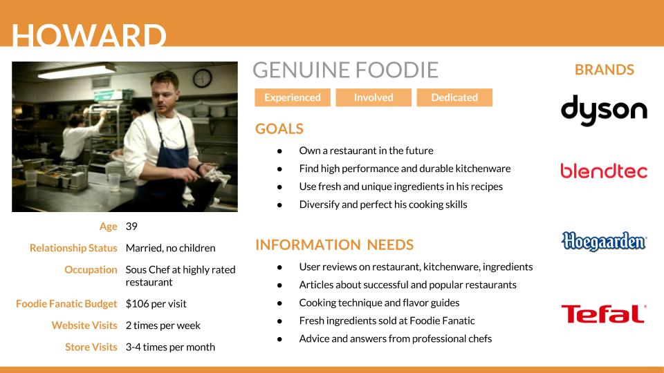
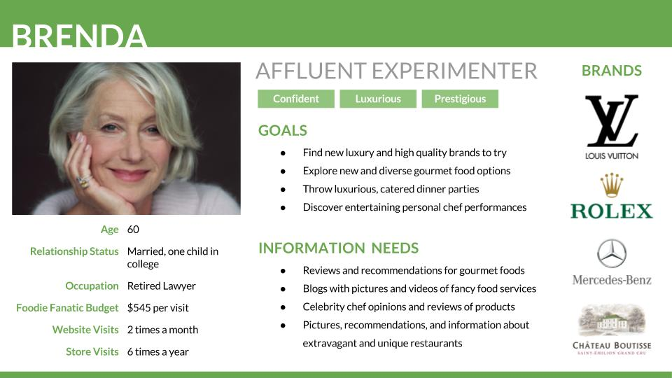
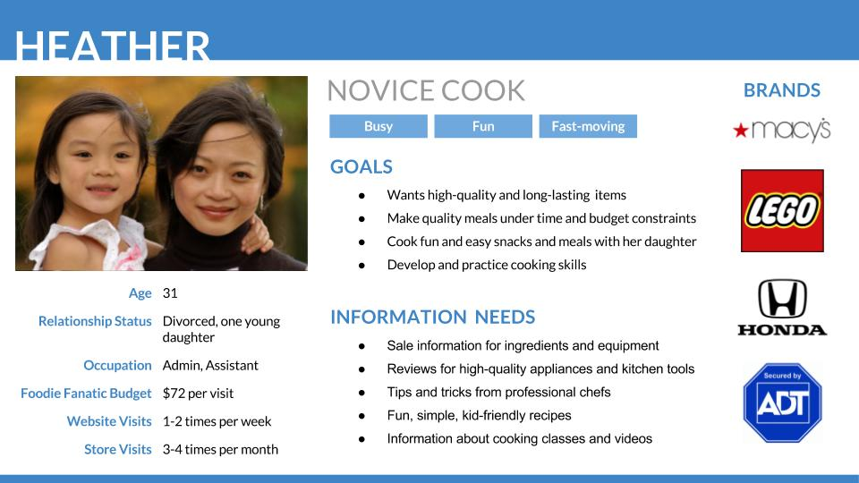
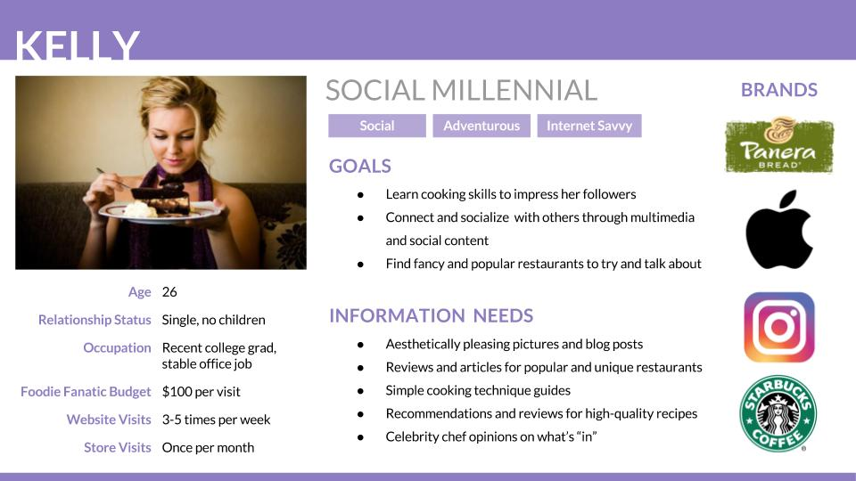
Interview
In order to create a more holistic online community, we felt that Foodie Fanatic should also target another demographic: college students. We conducted semi-structured interviews with local foodies at the University of Washington, and created a fifth persona based on our findings. One main difference between Natasha, our fifth persona, and Kelly is that Natasha loves to talk about food in-person, while Kelly focuses on social media channels.
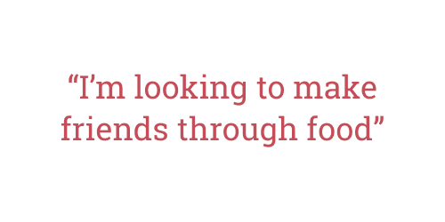
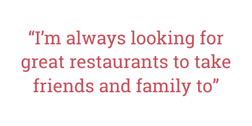
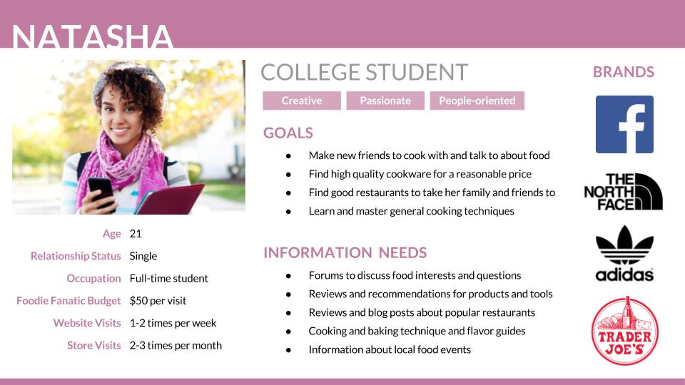
Competitive Analysis
We identified and evaluated the strengths and weaknesses of five similar businesses to help us create our business plan, site map, taxonomy, and wireframes for Foodie Fanatic. The main weakness we found among these five competitors is that there is little to no online community. Food52 is the strongest in this aspect, but they limit their online community to one page on their site: the hotline. This is where we decided to focus our attention in our business plan and information architecture strategy.
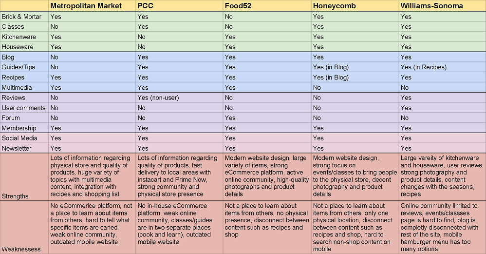
Our Plan
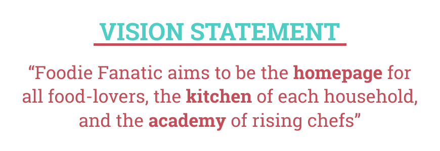
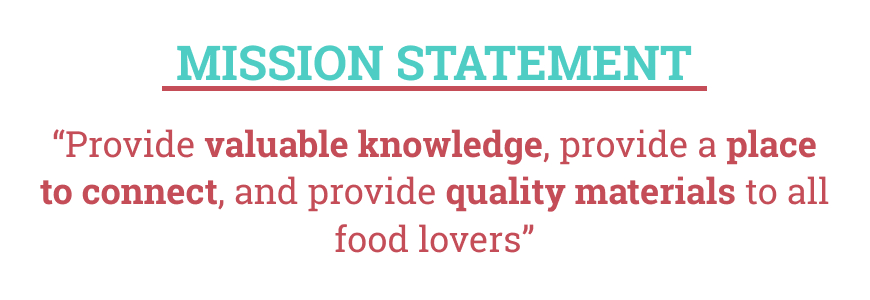
Sitemap
A sitemap provides a bird's-eye view of the information environment and shows the hierarchical structure of the new Foodie Fanatic website. This allows us to see relationships between information elements, most notably pages, and can be used to portray navigation, labeling, and organization systems. We created the sitemap based on the competitive analysis, and our vision and mission statements for Foodie Fanatic.
Shop is placed first on the left because at the end of the day, sales keeps Foodie Fanatic up float. The Explore page is where our targeted personas can find the information they most need: food-related reviews. Recipes are in the middle because it's slightly less important than Shop and Explore, but is a type of content that everyone can benefit from. Classes are placed near the end because it serves a small set of our users. The Forum is where dedicated users will go to be a part of Foodie Fanatic's online community.
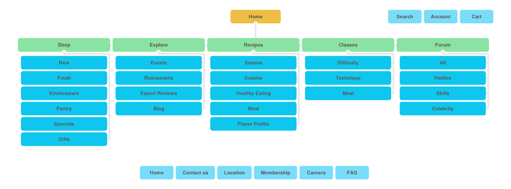
Taxonomy
A taxonomy is a system for naming and organizing thingss into groups that share similar characteristics. The goal of a taxonomy is to make content eaiser to find through searching or browsing. Using foodie-friendly labels, we created a taxonomy that will help the users of Foodie Fanatic find the content they are looking for.
Wireframes
Wireframes show how an individual page should look from an architectural perspective. They help clarify the grouping of content components, their order, and group priority, for a variety of screen sizes.
Using Balsamiq, we created wireframes for the five main pages of the new Foodie Fanatic: Shop, Explore, Recipes, Classes, Forum. There are both desktop and mobile screens, and each screen is annotated. I was responsible for finalizing each wireframe.